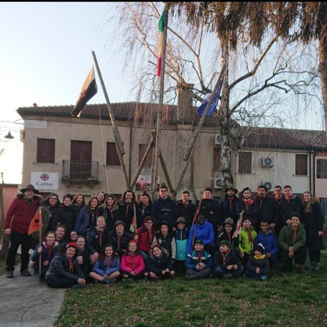

Gruppo Scout Canaro 1
Don Jerzy Popieluszko
In questo momento difficile abbiamo creato questo video per portare a tutti un nostro saluto di conforto.
ESTOTE PARATI: "sempre pronti per servire il prossimo"

In questo momento difficile abbiamo creato questo video per portare a tutti un nostro saluto di conforto.
ESTOTE PARATI: "sempre pronti per servire il prossimo"